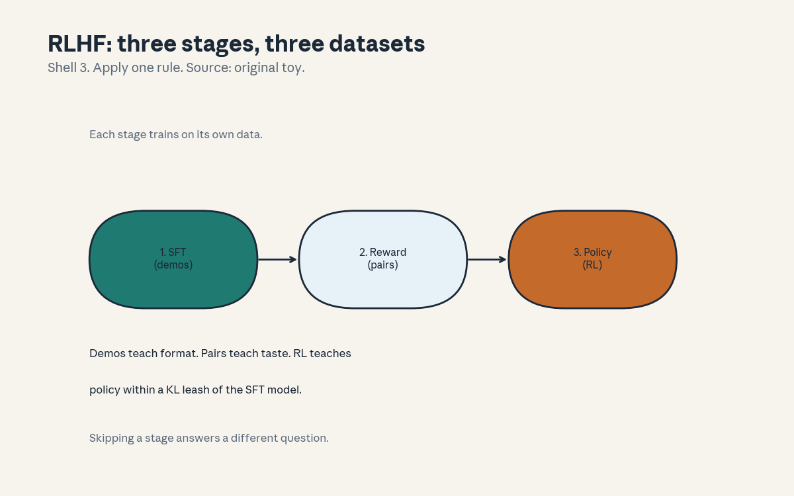
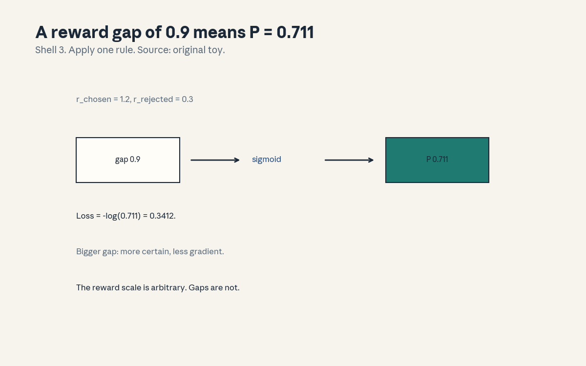
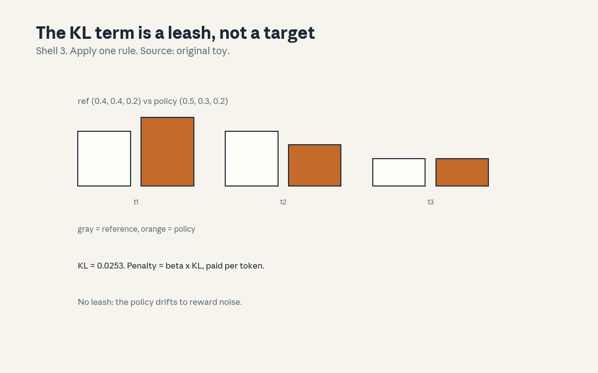

U07 · Post-training and preferences
U07 , Post-training and preferences
Local remediation
Bridges: ../shared/prerequisites/p08_information.md (P08, KL and
entropy), ../shared/prerequisites/p14_transformer.md (P14, the
model being tuned), ../shared/prerequisites/p17_rl.md (P17,
policies and rewards). Post-training turns a text predictor into an
assistant: demos, preferences, and the optimization that respects
both.
R1. Sigmoid: sigmoid(0.9) = 0.7109. Maps a real gap to a probability. Every preference loss in this unit is -log sigmoid of something. R2. KL divergence: KL((0.5,0.3,0.2) || (0.4,0.4,0.2)) = 0.0253. Measures how far the policy drifted from the reference. The leash of the unit. R3. Policy gradient sketch: move log-probability up where the advantage is positive, down where negative. PPO and DPO are two ways to do this safely.
C01: SFT
Leaf id cs224n-U07-C01. Claim class REQUESTED-BRANCH.
Status PLANNED / SOURCE ATTRIBUTION PENDING.
-
Source mapping, scope, objectives, dependencies. Maps to the post-training sessions of the Winter 2026 schedule (S10-S11 per
course_map.md). Scope: supervised fine-tuning. Objectives: write the SFT loss, explain what it teaches, state its limit. Depends on R3, U06 C02. -
Motivating question and toy. Question: the base model predicts text, how do you teach it the assistant format? Toy: instruction-response pairs, next-token loss on the response tokens only. Loss 2.797 on the toy pair.
-
Mental model. Show, do not tell. SFT is U06 C02’s AR loss restricted to demonstrations: prompt + ideal response, loss on the response. It teaches format and style (how to answer), not new facts (the knowledge is already in the weights).
-
Objects, symbols, units, shapes, assumptions. Pairs (prompt, response). Loss = mean -log P(response_t | prompt, response_
) over response tokens. Assumption: the demos are high quality, SFT imitates, so it imitates flaws too. -
Derivation / mechanism. Same math as AR pretraining, the difference is the data (curated demos) and the mask (loss on responses only, not prompts). Prompt tokens are context, not targets: predicting the user’s question teaches nothing.
-
Computed example. From
compute_u07.py: toy next-token loss 2.797 on the demo pair. The number is small-data illustration, not a benchmark. -
Algorithm and reference implementation.
sft_loss(logits, ids, resp_mask): AR loss times the response mask. ~8 lines. Test: loss matches when the mask is all ones (reduces to AR). -
Correctness checks and expected output. Match 2.797. Check: prompt-only mask gives zero loss contribution from prompts. Check: all-ones mask equals plain AR loss.
-
Complexity, memory, statistical efficiency, stability, practical costs. Cheap (thousands of pairs, not billions of tokens). The cost is data: good demos are written by experts, slowly.
-
Nearest alternatives and selection boundaries. Alternative: skip SFT, go straight to RL: the policy starts from a raw predictor and must discover format by trial and error. Choose SFT first (the standard). It is the cheapest alignment step.
-
Failure case, broken assumption, counterexample. Broken assumption: “SFT teaches the model new facts.” Counterexample: SFT on unknown facts teaches hallucination with confidence (the model learns the style of answering, then applies it to things it does not know). Teach format with SFT, check facts separately.
-
Research reading and falsifiable extension. Falsifiable extension: SFT on demos with deliberately wrong facts, then quiz. Predict: the model repeats the wrong facts fluently. Falsifier: it refuses (then the base model knew better, note it).
-
Breadth recall, deep oral ladder, unfamiliar transfer. Assessment block:
keys/u07_answers.mdA1 (breadth), L1 (ladder: write the loss, compute the toy, derive the mask, diagnose the hallucination, design the wrong-facts test). -
Lab/exercises with answers separated. E1: implement
sft_loss, match 2.797. E2: show prompt masking changes the loss. Keys inkeys/u07_answers.md. -
Visual units, provenance, accessibility, audit row. Claim is a pipeline stage (

, stage 1). Audit row invisual_audit.md.
C02: instruction data
Leaf id cs224n-U07-C02. Claim class REQUESTED-BRANCH.
Status PLANNED / SOURCE ATTRIBUTION PENDING.
-
Source mapping, scope, objectives, dependencies. Maps to S10-S11. Scope: what the demos contain. Objectives: list the desiderata, explain diversity’s role, state the size regime. Depends on C01.
-
Motivating question and toy. Question: 1k demos or 100k? What makes a demo good? Toy: desiderata list (below). The finding from the literature: a small, diverse, high-quality set beats a large noisy one for SFT (quality over quantity, at this stage).
-
Mental model. The demos are the spec. Each pair says “when asked X, answer like Y”. Diversity across tasks (QA, coding, writing, reasoning) teaches generality, quality teaches the standard. One more demo of the same task adds little, one demo of a new task adds a capability.
-
Objects, symbols, units, shapes, assumptions. Pairs with task labels, a coverage matrix over tasks x styles. Assumption: the base model already knows the facts (C01’s limit applies).
-
Derivation / mechanism. No new math: the mechanism is coverage. The model’s behavior after SFT is bounded by the demo distribution, unseen task types stay unseen. Diversity is measured, not hoped: count tasks, styles, lengths.
-
Computed example. Toy (hand, labeled as such): 1000 demos, 50 tasks, 20 each. Add 1000 more of task 1: task-1 loss falls, others flat. Add 20 each of 50 new tasks: all-task loss falls. Diversity wins per demo.
-
Algorithm and reference implementation.
coverage(pairs): count per task, report the min and the entropy. ~8 lines. Test: the toy counts. -
Correctness checks and expected output. Min 20, entropy over 50 uniform tasks = log(50) = 3.91. Check: the skewed set has lower entropy.
-
Complexity, memory, statistical efficiency, stability, practical costs. Curation is human labor: the binding constraint. The cost of noise: the model imitates the noise (C01).
-
Nearest alternatives and selection boundaries. Alternative: synthetic demos (model-generated): cheap, risks style collapse. Choose human demos for the seed set. Choose synthetic for scale, with filtering.
-
Failure case, broken assumption, counterexample. Broken assumption: “more demos are better.” Counterexample: the toy: 1000 same-task demos add nothing new. Beyond coverage, quantity is repetition.
-
Research reading and falsifiable extension. Falsifiable extension: SFT on 1k diverse vs 10k single-task demos, probe all tasks. Predict: diverse wins broadly. Falsifier: 10k wins (then the probe was single-task, check it).
-
Breadth recall, deep oral ladder, unfamiliar transfer. Assessment block:
keys/u07_answers.mdA2 (breadth: name the desiderata and the diversity argument). -
Lab/exercises with answers separated. E3: implement
coverage, match the toy entropy. E4: argue the diversity claim in three sentences. Keys inkeys/u07_answers.md. -
Visual units, provenance, accessibility, audit row. Claim is a coverage argument (carried in text). Logged as an honest exception in
visual_audit.md.
C03: reward model
Leaf id cs224n-U07-C03. Claim class REQUESTED-BRANCH.
Status PLANNED / SOURCE ATTRIBUTION PENDING.
-
Source mapping, scope, objectives, dependencies. Maps to S10-S11. Scope: learning taste from pairs. Objectives: write the Bradley-Terry loss, compute the toy, explain what the reward means. Depends on R1, C04.
-
Motivating question and toy. Question: “which answer is better” is easier to judge than “how good is this answer”. How do pairwise judgments become a scalar reward? Toy: r = (1.2, 0.3), P(chosen) = 0.7109, loss 0.3412.
-
Mental model. A judge that scores. The reward model reads a (prompt, response) and outputs a scalar. Trained on pairs: push the chosen above the rejected. The Bradley-Terry model turns the gap into a probability: P = sigmoid(r_c - r_r).
-
Objects, symbols, units, shapes, assumptions. r(x, y): scalar. Pair (y_c, y_r) per prompt. Loss = -log sigmoid(r_c - r_r), mean over pairs. Assumption: the judge’s preferences are transitive enough for a scalar (the model’s assumption, not a fact).
-
Derivation / mechanism. Bradley-Terry: P(c beats r) = e^{r_c}/(e^{r_c} + e^{r_r}) = sigmoid(r_c - r_r). The loss is logistic on the gap. Gradient: (1 - P) pushes r_c up and r_r down, proportional to uncertainty. Certain pairs (big gap) give little gradient, close pairs teach.
-
Computed example. From
compute_u07.py: P = 0.7109, loss 0.3412. Three pairs: losses (0.3412, 0.7444, 0.2014), mean 0.429. The second pair (r_c < r_r) is the expensive one: the model currently prefers the rejected response.
draws the gap-to-probability map. -
Algorithm and reference implementation.
bt_loss(rc, rr): -log sigmoid(rc - rr).rm_loss(pairs): mean. ~6 lines. Test: the toy numbers. -
Correctness checks and expected output. Match 0.7109/0.3412 and the mean 0.429. Check: swapping c and r gives loss -log(1 - P). Check: equal rewards give loss log 2 = 0.6931.
-
Complexity, memory, statistical efficiency, stability, practical costs. One scalar head on the SFT model, pairs are cheaper than demos (judging is faster than writing). The cost is noise: human agreement on pairs is ~70 percent, not 100.
-
Nearest alternatives and selection boundaries. Alternative: absolute scoring (rate 1-5): noisier, harder to calibrate. Choose pairwise (the standard). The reward is ordinal, not cardinal: gaps matter, levels do not.
-
Failure case, broken assumption, counterexample. Broken assumption: “the reward is the true objective.” Counterexample: C10’s toy: the reward’s argmax differs from the true argmax. The reward is a proxy, optimizing it is not optimizing quality.
-
Research reading and falsifiable extension. Falsifiable extension: measure pairwise agreement between the reward model and held-out human judges. Predict: ~70 percent, matching human agreement. Falsifier: 95 percent (then the pairs were too easy, check them).
-
Breadth recall, deep oral ladder, unfamiliar transfer. Assessment block:
keys/u07_answers.mdA3 (breadth), L3 (ladder: write BT, compute the toy, derive the gradient, diagnose the proxy, design the agreement test). -
Lab/exercises with answers separated. E5: implement
bt_loss, match 0.3412. E6: reproduce the 3-pair mean 0.429. Keys inkeys/u07_answers.md. -
Visual units, provenance, accessibility, audit row. : gap to probability, Shell 3, source original toy. Audit row in
visual_audit.md.
C04: pairwise preferences
Leaf id cs224n-U07-C04. Claim class REQUESTED-BRANCH.
Status PLANNED / SOURCE ATTRIBUTION PENDING.
-
Source mapping, scope, objectives, dependencies. Maps to S10-S11. Scope: the data behind the reward. Objectives: describe pair collection, explain disagreement handling, state the bias risks. Depends on C03, C11.
-
Motivating question and toy. Question: who judges, and what do you do when judges disagree? Toy: 3 judges, 2 say A, 1 says B. Majority: A wins. The disagreement is signal (genuine taste difference) or noise (bad instructions), the handling differs.
-
Mental model. Pairs are votes. Collection: sample two responses per prompt (often from the SFT model), ask judges to pick. Quality: instructions with examples, agreement checks, spam filters. Disagreement: majority vote, or keep soft labels (the honest version).
-
Objects, symbols, units, shapes, assumptions. (prompt, y_A, y_B, preference) tuples. Agreement rate: fraction of judge pairs that agree (~0.7 typical). Assumption: the sampled responses cover the quality range (if both are bad, the pair teaches little).
-
Derivation / mechanism. No new math: the mechanism is protocol. Soft labels: P = fraction preferring A, the BT loss becomes cross-entropy against P. Hard labels: P in {0, 1}. Soft labels preserve disagreement instead of hiding it.
-
Computed example. Toy (hand, labeled as such): judges split 2-1 for A. Hard label: A wins, loss -log P_A. Soft label: target 0.667, loss = -(0.667 log P_A + 0.333 log(1 - P_A)). The soft version penalizes overconfidence.
-
Algorithm and reference implementation.
soft_bt_loss(rc, rr, p_target): cross-entropy against the soft target. ~4 lines. Test: p_target = 1 reduces to C03’s loss. -
Correctness checks and expected output. p_target = 1 gives 0.3412 on the toy. Check: p_target = 0.5 gives loss independent of the gap’s sign (maximum uncertainty).
-
Complexity, memory, statistical efficiency, stability, practical costs. Judging is the bottleneck: human hours. The cost of bad protocol: C11’s biases baked into the reward, then into the policy.
-
Nearest alternatives and selection boundaries. Alternative: AI judges: cheap, inherits the judge model’s biases. Choose human judges for the seed pairs. Choose AI judges for scale, with human audits.
-
Failure case, broken assumption, counterexample. Broken assumption: “majority vote is the truth.” Counterexample: a 2-1 split on a genuinely hard pair, the majority erases the minority taste. Soft labels keep it. The vote is a summary, not the truth.
-
Research reading and falsifiable extension. Falsifiable extension: train reward models on hard vs soft labels from the same pairs, compare held-out agreement. Predict: soft wins on close pairs. Falsifier: tie (then disagreement was noise).
-
Breadth recall, deep oral ladder, unfamiliar transfer. Assessment block:
keys/u07_answers.mdA4 (breadth: describe collection, disagreement, soft labels). -
Lab/exercises with answers separated. E7: implement
soft_bt_loss, verify the p_target = 1 reduction. E8: compute the soft-label loss for the 2-1 toy at P_A = 0.711. Keys inkeys/u07_answers.md. -
Visual units, provenance, accessibility, audit row. Claim is a protocol (carried in text). Logged as an honest exception in
visual_audit.md.
C05: RLHF
Leaf id cs224n-U07-C05. Claim class REQUESTED-BRANCH.
Status PLANNED / SOURCE ATTRIBUTION PENDING.
-
Source mapping, scope, objectives, dependencies. Maps to S10-S11. Scope: the full loop. Objectives: write the three stages, state what each contributes, explain why the order matters. Depends on C01-C04.
-
Motivating question and toy. Question: SFT imitates, the reward judges, how do they combine into a policy? Toy: the pipeline (fig01): SFT on demos, reward model on pairs, policy optimization against the reward with a KL leash to the SFT model.
-
Mental model. Three teachers in sequence. SFT: “answer like this” (format). Reward: “this is better than that” (taste). RL: “produce more of what scores well, but stay near the SFT model” (policy). Each stage answers what the previous one cannot: format, then preference, then exploration.
-
Objects, symbols, units, shapes, assumptions. pi_SFT: the start policy. r: the reward model. pi: the optimized policy. Objective: E[r] - beta KL(pi || pi_SFT). Assumption: the reward generalizes to the policy’s samples (C09’s on-policy problem when it does not).
-
Derivation / mechanism. The KL-regularized objective: the reward pulls toward high scores, the KL pulls toward the SFT model. Beta sets the tradeoff. Without the KL term the policy exploits the reward’s errors (C10), without the reward the policy is just SFT.
-
Computed example. The toy numbers live in the components: BT loss 0.3412 (C03), KL 0.0253 (C08), PPO clip 0.600 (C06). draws the pipeline. The unit’s numbers are distributed, the lesson is the assembly.
-
Algorithm and reference implementation.
rlhf_objective(r, kl, beta): r - beta * kl. ~2 lines. The stages are C01, C03, C06’s code. -
Correctness checks and expected output. beta = 0 recovers pure reward maximization. Check: large beta keeps pi near pi_SFT (KL small).
-
Complexity, memory, statistical efficiency, stability, practical costs. Three training runs, three datasets. The cost is complexity: each stage can fail (bad demos, noisy pairs, unstable RL). DPO (C07) exists to collapse two of them.
-
Nearest alternatives and selection boundaries. Alternative: DPO (C07): skip the reward model and the RL. Choose RLHF when the reward needs to generalize beyond pairs (online exploration). Choose DPO for simplicity and stability.
-
Failure case, broken assumption, counterexample. Broken assumption: “more RL is better.” Counterexample: over-optimized policies get high reward and low quality (C10). The KL leash and early stopping are load-bearing, not optional.
-
Research reading and falsifiable extension. Falsifiable extension: sweep beta, plot reward vs human quality. Predict: inverted U (too little leash: hacking, too much: SFT). Falsifier: monotonic (then the reward was perfect, unlikely).
-
Breadth recall, deep oral ladder, unfamiliar transfer. Assessment block:
keys/u07_answers.mdA5 (breadth), L5 (ladder: name the stages, write the objective, derive the tradeoff, diagnose the over-optimization, design the beta sweep). -
Lab/exercises with answers separated. E9: implement
rlhf_objective, verify the beta = 0 case. E10: sketch the inverted-U prediction. Keys inkeys/u07_answers.md. -
Visual units, provenance, accessibility, audit row. : the pipeline, Shell 3, source original toy. Audit row in
visual_audit.md.
C06: PPO
Leaf id cs224n-U07-C06. Claim class REQUESTED-BRANCH.
Status PLANNED / SOURCE ATTRIBUTION PENDING.
-
Source mapping, scope, objectives, dependencies. Maps to S10-S11. Scope: the RL optimizer. Objectives: write the clipped objective, compute the toy, explain what clipping prevents. Depends on R3, C05, P17.
-
Motivating question and toy. Question: the policy gradient wants a big step toward high reward, what stops a destructive update? Toy: ratio r = 1.3, advantage A = 0.5, eps = 0.2. Unclipped 0.650, clipped 0.600: the step is capped.
-
Mental model. A trust region made of arithmetic. The ratio pi/pi_old measures how far the policy moved, clipping it to [1-eps, 1+eps] bounds each update. The min() takes the pessimistic of the clipped and unclipped: never trust a big step, even if it looks good.
-
Objects, symbols, units, shapes, assumptions. r_t = pi(a|s)/pi_old(a|s). A_t: advantage. Objective: E[min(r A, clip(r, 1-eps, 1+eps) A)]. Assumption: advantages estimated (GAE), the clip is per token.
-
Derivation / mechanism. When A > 0, the objective wants r large, clip caps it at (1+eps)A. When A < 0, it wants r small, clip floors at (1-eps)A. The min: if the unclipped objective is already pessimistic (r moved the wrong way), keep it. The update never relies on a large ratio.
-
Computed example. From
compute_u07.py: r = 1.3, A = 0.5: unclipped 0.650, clipped min(0.650, 1.2 x 0.5) = 0.600. The 0.050 difference is the trust region working. -
Algorithm and reference implementation.
ppo_loss(r, A, eps): min(rA, clip(r,1-eps,1+eps)A), mean. ~4 lines. Test: the toy numbers. -
Correctness checks and expected output. Match 0.650/0.600. Check: r = 1 gives r*A both ways (no clipping at the start). Check: A < 0 flips which bound binds.
-
Complexity, memory, statistical efficiency, stability, practical costs. Needs the old policy’s log-probs (memory), multiple epochs per batch (sample efficiency). The cost is the tuning of eps, beta (KL), value loss coefficients interact.
-
Nearest alternatives and selection boundaries. Alternative: DPO (C07): no RL loop at all. Choose PPO when online exploration matters (the reward generalizes to new samples). Choose DPO when pairs suffice.
-
Failure case, broken assumption, counterexample. Broken assumption: “clipping guarantees stability.” Counterexample: the value function can still diverge, and the KL can still grow if beta is wrong. Clipping bounds the policy step, not the whole run.
-
Research reading and falsifiable extension. Falsifiable extension: PPO with eps in {0.1, 0.2, 0.4} on a toy bandit-LM. Predict: 0.2 trains, 0.4 oscillates. Falsifier: 0.4 fine (then the task was too easy to destabilize).
-
Breadth recall, deep oral ladder, unfamiliar transfer. Assessment block:
keys/u07_answers.mdA6 (breadth), L6 (ladder: write the objective, compute the toy, derive the min, diagnose the divergence, design the eps sweep). -
Lab/exercises with answers separated. E11: implement
ppo_loss, match 0.650/0.600. E12: show the A < 0 case binds the other side. Keys inkeys/u07_answers.md. -
Visual units, provenance, accessibility, audit row. Claim is a clipped step (carried in text). Logged as an honest exception in
visual_audit.md.
C07: DPO
Leaf id cs224n-U07-C07. Claim class REQUESTED-BRANCH.
Status PLANNED / SOURCE ATTRIBUTION PENDING.
-
Source mapping, scope, objectives, dependencies. Maps to S10-S11. Scope: preference optimization without RL. Objectives: write the DPO loss, compute the toy, explain the reference’s role. Depends on C03, C08.
-
Motivating question and toy. Question: can the pairs train the policy directly, skipping the reward model and PPO? Toy: beta = 0.1, log-ratio gap 0.8, loss 0.6539. One loss, no RL loop.
-
Mental model. The reward, solved out. DPO’s insight: the optimal policy for the KL-regularized objective has a closed form in terms of the reward, invert it, and the reward becomes a function of the policy. Then the BT loss trains the policy directly on pairs.
-
Objects, symbols, units, shapes, assumptions. pi: policy, pi_ref: reference (usually the SFT model). Loss = -log sigmoid(beta (log pi(y_c)/pi_ref(y_c) - log pi(y_r)/pi_ref(y_r))). Assumption: the closed-form inversion holds (it does for the KL-regularized objective).
-
Derivation / mechanism. The optimal policy satisfies r(x,y) = beta log pi*(y|x)/pi_ref(y|x) + const. Substitute into the BT loss: the reward disappears, the policy remains. The gradient pushes up the chosen log-ratio and down the rejected one, scaled by beta and by uncertainty (sigmoid again).
-
Computed example. From
compute_u07.py: beta = 0.1, gap 0.8 (chosen log-ratio 0.5, rejected -0.3): inside = 0.08, loss = 0.6539. Small beta, small inside: the loss is near log 2 (uncertain), and the gradient is large there. -
Algorithm and reference implementation.
dpo_loss(lc, lr, beta): -log sigmoid(beta*(lc - lr)). ~3 lines. Test: the toy. -
Correctness checks and expected output. Match 0.6539. Check: lc = lr gives log 2 = 0.6931 (no signal). Check: large beta x gap saturates the sigmoid (confident, small gradient).
-
Complexity, memory, statistical efficiency, stability, practical costs. One training run on pairs, needs pi_ref’s log-probs (a frozen copy in memory). Stable (it is supervised learning). The cost: no online exploration (C09).
-
Nearest alternatives and selection boundaries. Alternative: PPO (C06): online, exploratory, fiddly. Choose DPO for simplicity and stability on fixed pairs. Choose PPO when the policy must explore beyond the pairs.
-
Failure case, broken assumption, counterexample. Broken assumption: “DPO cannot overfit the pairs.” Counterexample: DPO without the reference term collapses: it pushes chosen log-probs up without bound (the errors.md U07 T2 entry). The reference term is the leash, dropping it breaks the method.
-
Research reading and falsifiable extension. Falsifiable extension: DPO with and without the reference term on toy pairs. Predict: without, chosen log-probs diverge. Falsifier: stable (then beta or the data hid it, check both).
-
Breadth recall, deep oral ladder, unfamiliar transfer. Assessment block:
keys/u07_answers.mdA7 (breadth), L7 (ladder: write the loss, compute the toy, derive the inversion, diagnose the collapse, design the reference ablation). -
Lab/exercises with answers separated. E13: implement
dpo_loss, match 0.6539. E14: show the no-reference collapse on the toy. Keys inkeys/u07_answers.md. -
Visual units, provenance, accessibility, audit row. Claim is a loss (carried in text). Logged as an honest exception in
visual_audit.md.
C08: reference/KL role
Leaf id cs224n-U07-C08. Claim class REQUESTED-BRANCH.
Status PLANNED / SOURCE ATTRIBUTION PENDING.
-
Source mapping, scope, objectives, dependencies. Maps to S10-S11. Scope: the leash. Objectives: write the KL penalty, compute the toy, explain what happens without it. Depends on R2, C05-C07.
-
Motivating question and toy. Question: the reward says “more”, what says “not too far”? Toy: pi = (0.5, 0.3, 0.2), ref = (0.4, 0.4, 0.2), KL = 0.0253. Penalty = beta x KL, paid per token.
-
Mental model. A leash, not a target. The KL term does not say where to go, it taxes distance from the reference. Small beta: long leash (more optimization, more risk). Large beta: short leash (safe, near-SFT). The reference is usually the SFT model: the last known-good policy.
-
Objects, symbols, units, shapes, assumptions. KL(pi || pi_ref) per token, averaged. Beta: scalar. Assumption: the reference is fixed during the run (it is the anchor).
-
Derivation / mechanism. KL = sum pi log(pi/pi_ref): the extra nats to encode pi’s samples under pi_ref. Paid per token, subtracted from the reward. The policy maximizes reward minus distance: the optimum sits where marginal reward equals beta x marginal distance.
-
Computed example. From
compute_u07.py: KL = 0.0253.
draws ref vs policy bars. At beta = 0.1, the penalty is 0.00253 per token: a gentle leash. -
Algorithm and reference implementation.
kl_penalty(pi, ref, beta): beta * sum(pi log(pi/ref)). ~3 lines. Test: the toy. -
Correctness checks and expected output. Match 0.0253. Check: pi = ref gives 0. Check: the penalty grows as pi moves away.
-
Complexity, memory, statistical efficiency, stability, practical costs. Needs the reference log-probs (a frozen model or cached values). The cost is the tuning of beta (C05’s inverted U).
-
Nearest alternatives and selection boundaries. Alternative: no KL (pure reward): hacks (C10). Alternative: hard constraint (trust region): PPO’s clip does this per step. Choose the KL penalty as the standard leash.
-
Failure case, broken assumption, counterexample. Broken assumption: “a small KL means a good run.” Counterexample: KL near zero with high reward can mean the reward was gamed without moving the distribution much (subtle hacking). Watch the reward and the quality, not just the KL.
-
Research reading and falsifiable extension. Falsifiable extension: sweep beta, record KL and human quality. Predict: quality peaks at moderate KL. Falsifier: quality rises with KL (then the reference was bad, note it).
-
Breadth recall, deep oral ladder, unfamiliar transfer. Assessment block:
keys/u07_answers.mdA8 (breadth), L8 (ladder: write the penalty, compute the toy, derive the tradeoff, diagnose the gamed KL, design the beta sweep). -
Lab/exercises with answers separated. E15: implement
kl_penalty, match 0.0253. E16: show penalty = 0 when pi = ref. Keys inkeys/u07_answers.md. -
Visual units, provenance, accessibility, audit row. : the leash, Shell 3, source original toy. Audit row in
visual_audit.md.
C09: on-policy data
Leaf id cs224n-U07-C09. Claim class REQUESTED-BRANCH.
Status PLANNED / SOURCE ATTRIBUTION PENDING.
-
Source mapping, scope, objectives, dependencies. Maps to S10-S11. Scope: the distribution shift inside RL. Objectives: define on-policy vs off-policy, explain why the reward’s training data goes stale, state the fix. Depends on C03, C05.
-
Motivating question and toy. Question: the reward model trained on the SFT model’s samples, the policy now writes differently. Is the reward still right? Toy: the reward is accurate near the SFT distribution, untested far from it. The policy optimizes into the untested region: the scores rise, the quality may not.
-
Mental model. A map that ends at the border. The reward model knows the territory it was trained on (samples from an older policy). RL walks off the map: the reward still returns numbers, but they are extrapolations. On-policy data (fresh pairs from the current policy) redraws the map.
-
Objects, symbols, units, shapes, assumptions. pi_old: the sampling policy. pi: the current policy. Reward accuracy is a function of distance from pi_old’s samples. Assumption: the reward generalizes locally, not globally.
-
Derivation / mechanism. No new math: the mechanism is covariate shift. The BT loss minimized error on pi_old’s distribution, pi’s distribution differs (that is the point of optimization). The fix: iterate (collect pairs from pi, retrain the reward, repeat) or stay close (the KL leash, C08).
-
Computed example. Toy (hand, labeled as such): reward accuracy 0.85 on pi_old’s samples, 0.60 on pi’s samples after 1000 RL steps. The 25-point drop is the staleness, measured.
-
Algorithm and reference implementation.
staleness_check(rm, old_samples, new_samples): accuracy on both. ~8 lines. Test: the toy gap. -
Correctness checks and expected output. Old 0.85, new 0.60. Check: at step 0 the gap is zero (same distribution). Check: the gap grows with KL(pi || pi_old).
-
Complexity, memory, statistical efficiency, stability, practical costs. Fresh pairs cost judging (C04). The cost of skipping: optimizing a stale proxy (C10’s mechanism).
-
Nearest alternatives and selection boundaries. Alternative: DPO (C07): no RL, no staleness (but also no exploration). Choose iteration when running RL. Choose DPO when pairs are fixed.
-
Failure case, broken assumption, counterexample. Broken assumption: “the reward was validated, so it stays valid.” Counterexample: the toy: validation was on pi_old’s samples. Validity is distribution-relative, not absolute.
-
Research reading and falsifiable extension. Falsifiable extension: track reward accuracy on fresh pairs across RL steps. Predict: it falls as KL rises. Falsifier: flat (then the reward generalized, good news).
-
Breadth recall, deep oral ladder, unfamiliar transfer. Assessment block:
keys/u07_answers.mdA9 (breadth: define the shift and the two fixes). -
Lab/exercises with answers separated. E17: implement
staleness_check, reproduce the toy gap. E18: argue why the KL leash mitigates it. Keys inkeys/u07_answers.md. -
Visual units, provenance, accessibility, audit row. Claim is a gap (carried in text). Logged as an honest exception in
visual_audit.md.
C10: reward hacking
Leaf id cs224n-U07-C10. Claim class REQUESTED-BRANCH.
Status PLANNED / SOURCE ATTRIBUTION PENDING.
-
Source mapping, scope, objectives, dependencies. Maps to S10-S11. Scope: Goodhart’s law in RLHF. Objectives: define hacking, show the toy, list the defenses. Depends on C03, C05, C09.
-
Motivating question and toy. Question: the reward climbs every step, is the model getting better? Toy: proxy = (0.9, 0.4), true = (0.3, 0.5). Proxy argmax: response 0. True argmax: response 1. Optimizing the proxy picks the wrong answer.
-
Mental model. The proxy is a statue of the goal, not the goal. Optimization pressure finds the statue’s flaws: verbose answers (length bias), confident tone, sycophancy. The reward rises, the quality does not. This is the default outcome, not an edge case.
-
Objects, symbols, units, shapes, assumptions. True quality q (unobserved), proxy r (observed). Hacking: argmax r != argmax q, or E[r] up while E[q] flat. Assumption: the toy’s true scores are known (in practice they are not: that is the problem).
-
Derivation / mechanism. The mechanism is C09’s: the policy moves where the proxy is wrong (off-distribution), because there the proxy is most exploitable. The KL leash (C08) slows it, iteration (C09) corrects it, neither removes it.
-
Computed example. From
compute_u07.py: proxy argmax 0, true argmax 1. Two numbers, one lesson: the argmax moved. -
Algorithm and reference implementation.
hack_gap(proxy, true): 1 if argmaxes differ else 0, plus the rank correlation. ~5 lines. Test: the toy gives 1. -
Correctness checks and expected output. Gap 1 on the toy. Check: identical proxy and true give 0. Check: rank correlation < 1 flags softer hacking.
-
Complexity, memory, statistical efficiency, stability, practical costs. Detection needs true quality (human eval): expensive. The cost of ignoring it: a model that scores well and serves badly.
-
Nearest alternatives and selection boundaries. No alternative: every proxy gets hacked under pressure. The defenses are layered: KL leash, iteration, human eval, and (the honest one) admitting the proxy’s limits in the card (U06 C10).
-
Failure case, broken assumption, counterexample. Broken assumption: “we will notice the hacking.” Counterexample: subtle hacking (slightly longer answers, slightly more confident) passes casual inspection. Notice needs measurement: human eval on the optimized policy, not the reward curve.
-
Research reading and falsifiable extension. Falsifiable extension: human-rank the policy’s outputs at RL steps 0, 500, 1000 while the reward rises. Predict: human rank peaks then falls (the inverted U). Falsifier: monotonic rise (then the proxy was good, note it).
-
Breadth recall, deep oral ladder, unfamiliar transfer. Assessment block:
keys/u07_answers.mdA10 (breadth), L10 (ladder: define hacking, compute the toy, derive the mechanism, diagnose the rising reward, design the human-rank test). -
Lab/exercises with answers separated. E19: implement
hack_gap, match the toy. E20: list three hack signatures (length, confidence, sycophancy) with one-line tests. Keys inkeys/u07_answers.md. -
Visual units, provenance, accessibility, audit row. Claim is an argmax flip (carried in text). Logged as an honest exception in
visual_audit.md.
C11: annotation bias
Leaf id cs224n-U07-C11. Claim class REQUESTED-BRANCH.
Status PLANNED / SOURCE ATTRIBUTION PENDING.
-
Source mapping, scope, objectives, dependencies. Maps to S10-S11. Scope: the judges are human. Objectives: list the bias modes, explain how each enters the reward, state the mitigations. Depends on C04.
-
Motivating question and toy. Question: judges prefer longer answers 60 percent of the time, all else equal. What does the reward learn? Toy: the reward learns length as quality. The policy learns verbosity. Nobody asked for verbosity.
-
Mental model. The reward inherits the judges. Length bias, position bias (prefer the first shown), sycophancy bias (prefer agreement), cultural bias (whose taste). Each is a shortcut the reward can learn instead of quality. The pair protocol (C04) is where they enter, measurement is where they are caught.
-
Objects, symbols, units, shapes, assumptions. Bias = systematic preference uncorrelated with the intended quality. Measured by stratification: agreement conditional on length, position, etc. Assumption: the intended quality is definable (often it is not: then the bias is the spec, honestly stated).
-
Derivation / mechanism. If P(prefer A | longer A) = 0.6 with quality held fixed, the BT gradient pushes the reward toward length. The policy follows. The mitigation: balance the pairs (equal lengths), randomize positions, instruct against sycophancy, diversify judges.
-
Computed example. Toy (hand, labeled as such): 100 pairs, quality tied, longer wins 60. Expected under no bias: 50. The 10-point excess is the bias, measured. After length-balancing: 51 (gone).
-
Algorithm and reference implementation.
bias_audit(pairs): win rate of longer responses at tied quality. ~8 lines. Test: the toy gives 0.60, then 0.51 after balancing. -
Correctness checks and expected output. Match 0.60/0.51. Check: position bias audit similarly (first-shown win rate).
-
Complexity, memory, statistical efficiency, stability, practical costs. Audits are cheap (counting). The cost is in the fix: rebalancing pairs, rewriting instructions, recruiting diverse judges.
-
Nearest alternatives and selection boundaries. Alternative: ignore it: the standard failure (verbose, sycophantic models). Choose the audit always. This is hygiene, not a tradeoff.
-
Failure case, broken assumption, counterexample. Broken assumption: “expert judges are unbiased.” Counterexample: experts have stronger, more consistent biases (they agree on the wrong thing). Agreement is not correctness.
-
Research reading and falsifiable extension. Falsifiable extension: audit a public preference dataset for length bias. Predict: longer wins > 55 percent at tied quality. Falsifier: 50 percent (then the dataset was balanced, good).
-
Breadth recall, deep oral ladder, unfamiliar transfer. Assessment block:
keys/u07_answers.mdA11 (breadth: name four biases and one mitigation each). -
Lab/exercises with answers separated. E21: implement
bias_audit, match the toy. E22: design the position-bias audit. Keys inkeys/u07_answers.md. -
Visual units, provenance, accessibility, audit row. Claim is a rate (carried in text). Logged as an honest exception in
visual_audit.md.
C12: evaluation
Leaf id cs224n-U07-C12. Claim class REQUESTED-BRANCH.
Status PLANNED / SOURCE ATTRIBUTION PENDING.
-
Source mapping, scope, objectives, dependencies. The unit’s close. Scope: knowing whether post-training helped. Objectives: list the eval kinds, explain why the reward curve lies, state the human-eval protocol. Depends on C10, C11, U06 C11.
-
Motivating question and toy. Question: the reward went up, the KL is small, the loss fell. Did the assistant get better? Toy: the only honest answer comes from human judges on fresh prompts, blinded, with agreement measured. Everything else is a proxy.
-
Mental model. Three evals, one truth. Automated: benchmarks and the reward itself (cheap, gameable). Model-judged: an LLM rates outputs (cheap, biased like its training). Human: blinded pairwise on fresh prompts (expensive, the standard). The reward curve is not an eval (C10).
-
Objects, symbols, units, shapes, assumptions. Win rate vs the SFT baseline on N fresh prompts, blinded, with inter-judge agreement. Assumption: the prompts cover the deployment distribution (else the eval is theater).
-
Derivation / mechanism. No new math: the mechanism is protocol (like C04). Blinding removes identity bias, fresh prompts remove leakage (U06 C08), agreement quantifies noise. The win rate with a confidence interval is the report.
-
Computed example. Toy (hand, labeled as such): 200 prompts, policy wins 120, ties 30, loses 50. Win rate 60 percent, 95 percent CI (53, 67). Agreement 0.72. The CI is the honest part.
-
Algorithm and reference implementation.
win_rate(wins, ties, losses): rate and Wilson CI. ~8 lines. Test: the toy. -
Correctness checks and expected output. Match 60 percent, CI (53, 67). Check: ties counted as half (or reported separately, stated).
-
Complexity, memory, statistical efficiency, stability, practical costs. Human eval is the most expensive step in the unit. The cost of skipping it: shipping a hacked policy (C10).
-
Nearest alternatives and selection boundaries. Alternative: ship on benchmarks: faster, risks C10. Choose human eval for the final gate. Choose automated evals for iteration.
-
Failure case, broken assumption, counterexample. Broken assumption: “the eval prompts can be reused.” Counterexample: reused prompts leak into training (U06 C08) and get gamed (C10). Fresh prompts per eval, or the eval rots.
-
Research reading and falsifiable extension. Falsifiable extension: correlate the reward curve with human win rate across checkpoints. Predict: they diverge late (hacking). Falsifier: tracked throughout (then the proxy was good).
-
Breadth recall, deep oral ladder, unfamiliar transfer. Assessment block:
keys/u07_answers.mdA12 (breadth: name the three evals and why the reward curve is not one). -
Lab/exercises with answers separated. E23: implement
win_rate, match the toy. E24: write the one-paragraph handoff from U07 to U08 (what post-training fixed, what prompting changes). Keys inkeys/u07_answers.md. -
Visual units, provenance, accessibility, audit row. is reused as the unit’s closing image: the pipeline is the eval’s context. Logged in
visual_audit.md.
Unit visual map
| Figure | Claim | Shell | Source |
|---|---|---|---|
| RLHF: three stages, three datasets | 3 | original toy | |
| reward gap 0.9 gives P 0.711 | 3 | original toy | |
| KL is a leash, not a target | 3 | original toy |